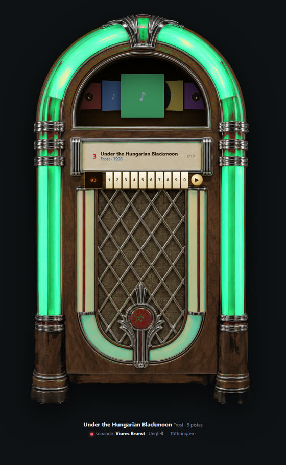
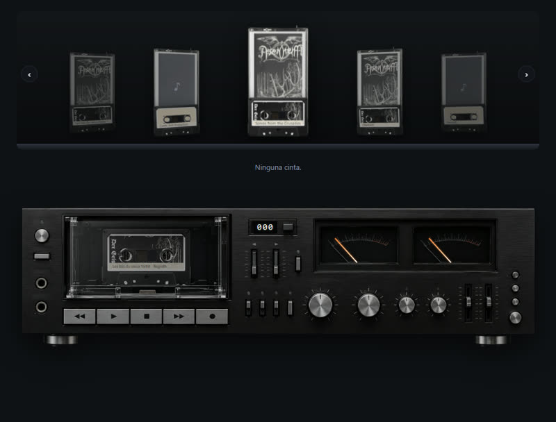
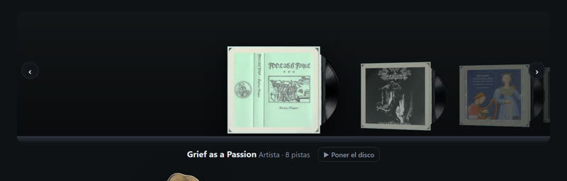
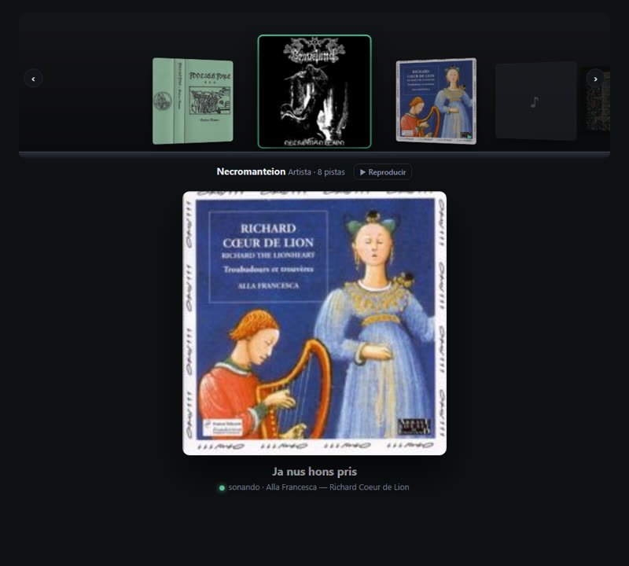

Trovador
Tu colección de música, entera y bien puesta: la descarga, la ordena, la etiqueta y te la reproduce.
Trovador.exe, sin instalar. Windows 10/11.
Qué hace
De YouTube, YouTube Music, Bandcamp y Soulseek. Discos enteros, troceados por capítulos, etiquetados y con carátula.
Cruza cada carpeta con MusicBrainz, Deezer, Bandcamp y Discogs: pistas que faltan, orden, duraciones, edición.
Renombra carpetas, las mete en la de su artista, detecta duplicados, separa discos en un solo fichero.
Títulos, números, artista, año, carátula incrustada; y el formato de origen (CD, vinilo, cinta).
Cada carpeta de disco con su icono: la carátula como CD, vinilo o cinta; los artistas con su logo o foto.
Reproductor con cola, búsqueda y favoritos en cuatro visualizaciones: gramola, pletina de casete, gramófono y carrusel.
Copia discos a un USB con nombres aptos para FAT32 y, si quieres, todo a MP3.
Código abierto (MIT), sin cuentas ni telemetría. Las herramientas (yt-dlp, ffmpeg) se descargan de sus sitios oficiales.
Favoritos, a lo grande




Cómo se usa
- Descarga el zip y saca
Trovador.exea una carpeta tuya (por ejemploDocumentos\Trovador). - Ábrelo. La primera vez descarga yt-dlp, ffmpeg, deno y slskd (~230 MB) a
bin\, junto al exe, desde sus repositorios oficiales. - En Biblioteca, elige la carpeta de tu música. En Reproductor, dale al play.
Tus ajustes, favoritos y la caché de carátulas viven en %APPDATA%\Trovador. Para actualizar, descarga el zip nuevo y sustituye el exe.